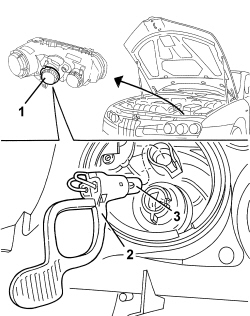

5540B26 BULB (ONE) FOR SIDE LIGHT FOR ONE HEADLAMP/LIGHT CLUSTER, L/H OR R/H - R+R
- Path
- Procedures > 55 ELECTRICAL EQUIPMENT > 5540 EXTERIOR LIGHTING > 5540B HEADLAMPS > 5540B26 BULB (ONE) FOR SIDE LIGHT FOR ONE HEADLAMP/LIGHT CLUSTER, L/H OR R/H - R+R
- Kind
- repair procedure (removal / refitting; the operation number is the code)
- Applies to
- all engines; all production periods
- Interactive page
- https://sloeber94.github.io/elrnDB-aBrrSpdr/en/#/946002390
Applies to: all engines; all production periods
 Removing
Removing
 Refitting
Refitting- Open the bonnet.
1. Remove the cover (bayonet mount).
2. Extract the bulb holder and bulb (press-fit).
3. Extract the bulb from the bulb holder (press fit).

Applies to: all engines; all production periods
Refitting
Removing- Check the condition of the bulb and make sure that it is clean.
- If necessary, fit the bulb in the bulb holder (press fit).
- If necessary, fit the bulb in the bulb holder (press fit).
- Refit the cover (bayonet mount).
- Close the bonnet.
- Check that the bulb is working.